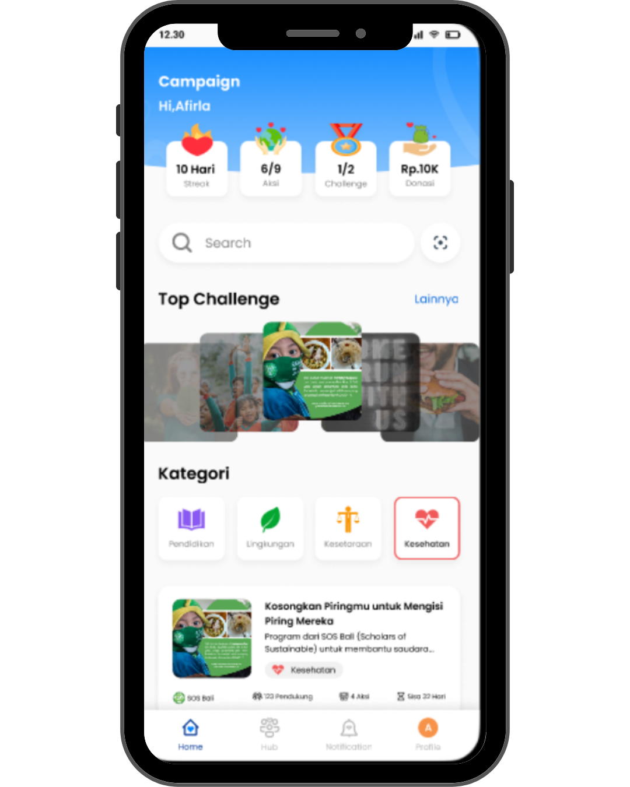
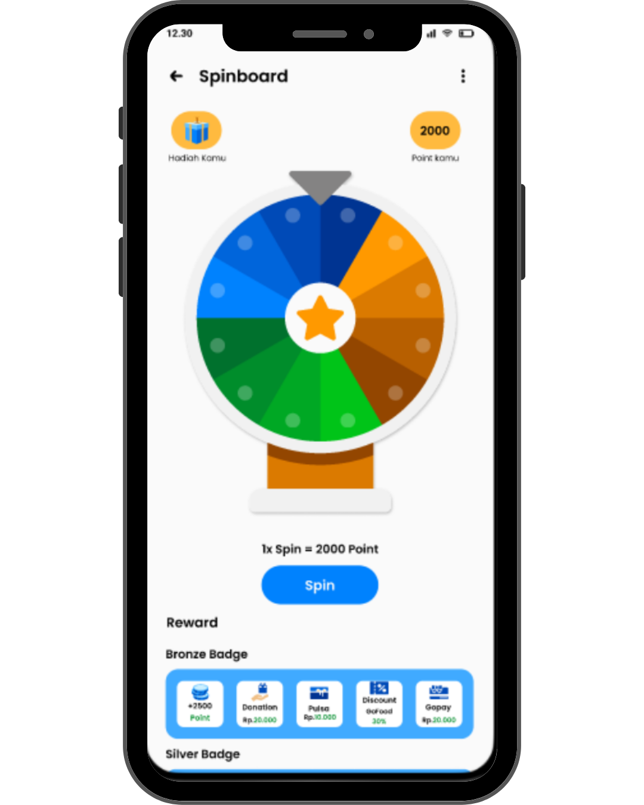

A UI/UX redesign project focused on integrating gamification features into the Campaign application to improve user engagement and motivation.
This project was developed collaboratively as a final team project in the UI/UX Design training program by Skilvul under the Kampus Merdeka Kominfo (now Komdigi) program.
UI/UX Designer
